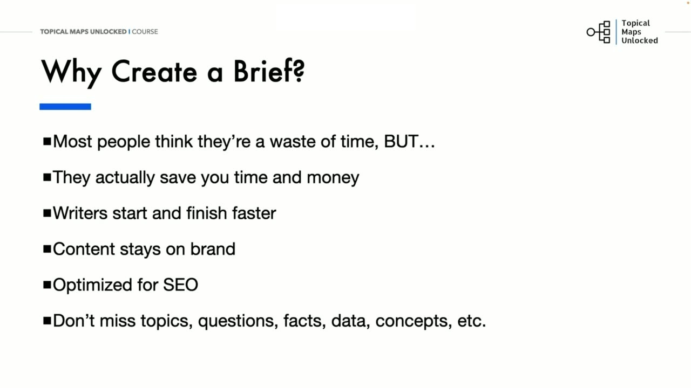
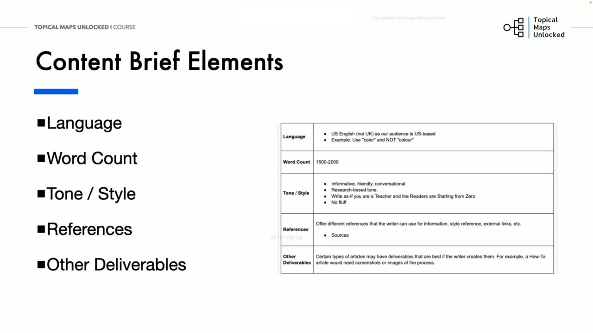
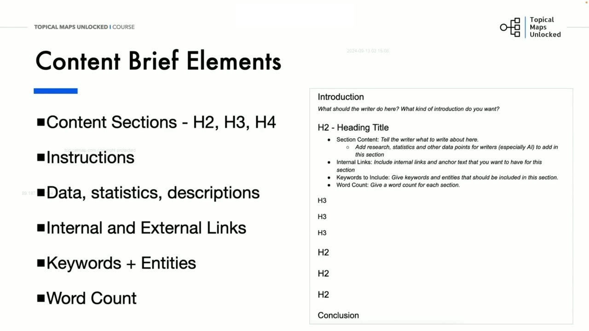
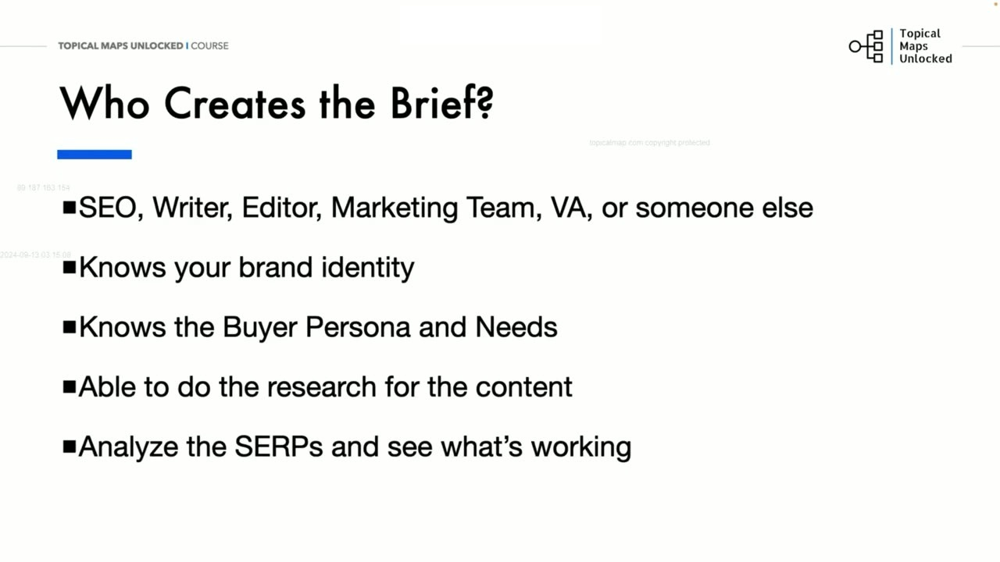
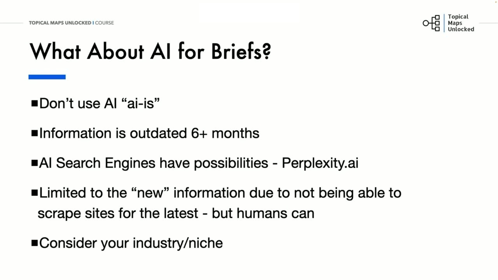
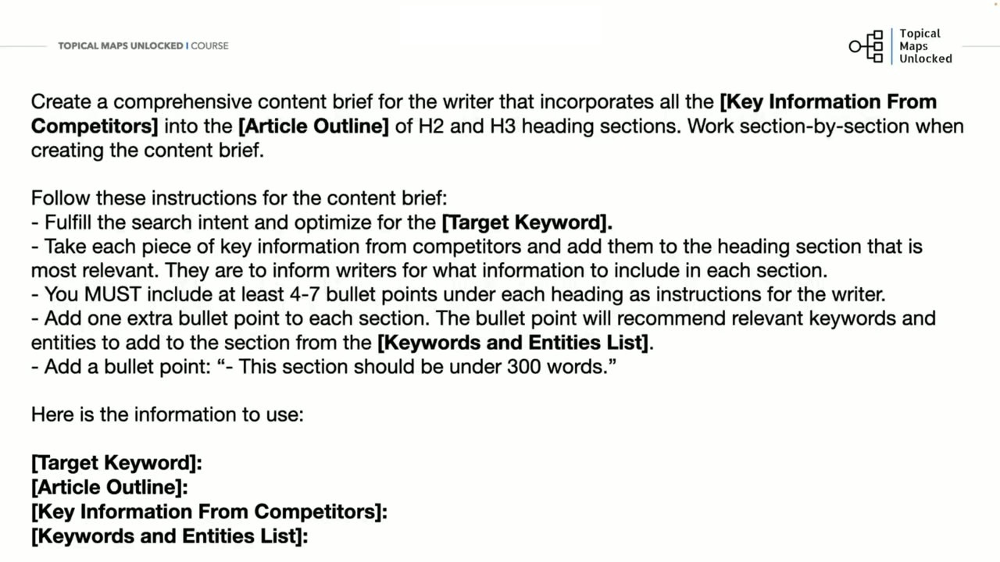

Content Brief Creation
1. Bản mô tả nội dung (Content Brief) là gì và tại sao bắt buộc phải tạo?
Trong bài học thứ hai, Yoyao phân tích chi tiết tài liệu quan trọng bậc nhất của khâu sản xuất: Content Brief (Bản định hướng / tóm tắt nội dung bài viết).
Nhiều người quản lý thường có suy nghĩ sai lầm rằng việc lập dàn ý chi tiết là lãng phí thời gian và muốn người viết bắt tay vào gõ bài ngay lập tức. Tuy nhiên, Yoyao khẳng định: Content Brief thực tế lại giúp bạn tiết kiệm được rất nhiều thời gian và tiền bạc!
Lợi ích vượt trội của một bản Content Brief chuẩn chỉ:
- Định hướng chuẩn xác cho người viết (writers), biên tập viên (editors) và trợ lý ảo (VAs) cùng nhìn về một hướng, loại bỏ sự mơ hồ trong quá trình triển khai nội dung.
- Người viết có sẵn khung sườn logic và đầy đủ dữ liệu đã được nghiên cứu kỹ lưỡng, giúp họ hoàn thành bài viết nhanh hơn gấp 2 đến 3 lần mà không bị bí ý tưởng hay mất phương hướng giữa chừng.
- Giữ cho nội dung luôn bám sát giọng điệu, văn phong và bản sắc độc đáo của thương hiệu (Brand Voice), đảm bảo tính nhất quán trên toàn bộ website.
- Tối ưu hóa SEO tối đa: Không bao giờ bỏ sót các chủ đề phụ, câu hỏi thường gặp, số liệu thực tế hay các thực thể quan trọng mà thuật toán Google yêu cầu.
Khi có một bản brief rõ ràng, biên tập viên sẽ không phải tốn hàng giờ đồng hồ quý báu để sửa chữa các lỗi lạc đề hay yêu cầu người viết phải đập đi viết lại toàn bộ bài viết từ đầu. Nó tạo nên một quy trình vận hành có tính lặp lại cao và đem lại sự yên tâm tuyệt đối cho nhà quản trị.
Một bản brief chất lượng cao sẽ biến mục tiêu tiếp thị thành một bộ hướng dẫn thực thi rõ ràng, giúp bất kỳ người viết nào cũng có thể tạo ra sản phẩm đúng ý ngay từ bản thảo đầu tiên.

2. Bảy thành phần cốt lõi cấu thành một Content Brief hoàn chỉnh
Dựa trên tài liệu mẫu PDF chuẩn mực của khóa học (02-Content Brief Creation.pdf), Yoyao mổ xẻ 7 thành phần cấu tạo nên một Content Brief chuyên nghiệp:
Mỗi thành phần đóng vai trò như một mắt xích không thể tách rời, đảm bảo cho bài viết vừa có tính chuyên môn sâu sắc vừa đáp ứng hoàn hảo các tiêu chuẩn kỹ thuật On-page khắt khe nhất của các công cụ tìm kiếm.
- Keywords (Từ khóa mục tiêu): Từ khóa chính và danh sách các từ khóa ngữ nghĩa liên quan (LSI/NLP keywords) cần phải phân bổ tự nhiên trong các phân đoạn để củng cố tín hiệu chủ đề.
- Article Title (Tiêu đề bài viết): Tiêu đề H1 dự kiến chuẩn SEO và có sức hấp dẫn cao để tối ưu tỷ lệ nhấp chuột (CTR) khi hiển thị trên trang kết quả tìm kiếm.
- Goals (Mục tiêu bài viết): Xác định rõ mục đích xuất bản: giải quyết thắc mắc của độc giả, thu hút khách hàng tiềm năng hay thúc đẩy bán hàng, và bài viết này thuộc giai đoạn nào trong hành trình người mua (Nhận thức, Cân nhắc hay Quyết định).
- Language (Ngôn ngữ): Quy định cụ thể biến thể ngôn ngữ (ví dụ: Tiếng Anh - Mỹ US English cho độc giả Hoa Kỳ) nhằm tránh nhầm lẫn về từ vựng và ngữ pháp.
- Word Count (Độ dài số từ): Khoảng số từ mục tiêu cần đạt được (ví dụ: 1500–2000 từ) dựa trên phân tích độ dài trung bình của các đối thủ hàng đầu.
- Tone / Style (Giọng điệu và Văn phong): Thân thiện, cung cấp thông tin hữu ích, trò chuyện gần gũi nhưng vẫn giữ tính chuyên nghiệp, tránh các thuật ngữ sáo rỗng khó hiểu.
- References (Tài liệu tham khảo): Danh sách các bài viết đang dẫn đầu của đối thủ để người viết nắm bắt mặt bằng chất lượng cần phải vượt qua và những thiếu sót cần bổ khuyết.
Ngoài ra, phần sản phẩm bàn giao khác (Other Deliverables) sẽ chỉ rõ các yêu cầu về hình ảnh chụp màn hình, ảnh đồ họa infographic hay video cần nhúng vào bài viết để nâng cao trải nghiệm người dùng.
Việc chuẩn hóa 7 yếu tố này giúp toàn bộ các bài viết trên trang web đều đạt được sự đồng bộ hoàn hảo về phong cách và chất lượng.

3. Chi tiết hóa từng phân đoạn H2, H3 và hướng dẫn cụ thể cho người viết
Phần quan trọng nhất chiếm trọn tâm huyết của người lập Brief chính là cấu trúc khung bài chi tiết (Content Sections & Instructions):
- Phần Mở đầu (Introduction): Hướng dẫn người viết cách mở bài: Đánh thẳng vào nỗi đau của độc giả, tạo sự đồng cảm và hứa hẹn giải pháp rõ ràng trong bài viết. Nêu rõ loại mở đầu mong muốn (câu chuyện, số liệu giật mình hay câu hỏi trực diện).
- Các đề mục H2, H3, H4: Liệt kê danh sách tiêu đề phụ theo cấu trúc phân cấp chặt chẽ, mạch lạc và bám sát ý định tìm kiếm.
- Chỉ dẫn nội dung cụ thể (Section Instructions): Dưới mỗi đề mục H2/H3, người lập Brief phải gạch đầu dòng từ 4 đến 7 ý chính bắt buộc người viết phải đề cập, kèm theo số liệu thống kê, dữ kiện thực tế cần đưa vào.
- Chỉ định liên kết nội bộ và thực thể (Internal Links & Entities): Nêu rõ bài viết này cần chèn liên kết trỏ về những trang nào trên website, sử dụng neo văn bản (anchor text) nào, và cần nhắc đến các thực thể (entities) nào để Google hiểu rõ ngữ cảnh.
- Giới hạn độ dài từng phân đoạn: Đặt ra khuyến nghị số từ cho mỗi phần (ví dụ: mỗi phần H2/H3 không nên vượt quá 300 từ) để giúp bài viết chặt chẽ, súc tích và tránh hiện tượng lan man, dài dòng.
Các chỉ dẫn chi tiết này giúp người viết tự tin triển khai bài viết nhanh chóng mà không lo thiếu sót các yếu tố cốt lõi của chủ đề.

4. Ai là người chịu trách nhiệm tạo Content Brief trong tổ chức?
Ai nên là người đảm nhận công việc quan trọng này? Yoyao phân tích các vai trò trong tổ chức:
Người tạo Brief có thể là chuyên gia SEO, người viết kỳ cựu, biên tập viên, đội ngũ tiếp thị hoặc một trợ lý ảo (VA) được đào tạo bài bản. Bất kể là ai, người chịu trách nhiệm lập Brief bắt buộc phải hội tụ 4 năng lực cốt lõi:
- Thấu hiểu sâu sắc bản sắc thương hiệu (Brand Identity): Nắm vững giá trị cốt lõi, sứ mệnh và phong cách truyền thông đặc trưng của doanh nghiệp.
- Hiểu rõ chân dung và nhu cầu khách hàng (Buyer Persona): Biết chính xác độc giả đang gặp khó khăn gì, trình độ hiểu biết đến đâu và cần câu trả lời như thế nào.
- Có kỹ năng nghiên cứu sâu sắc (Deep Research): Khả năng tìm kiếm tài liệu chuyên sâu, số liệu kiểm chứng và thông tin độc bản từ các nguồn uy tín.
- Thành thạo phân tích SERP (SERP Analysis): Quan sát và giải mã được tại sao các đối thủ hàng đầu lại được Google ưu ái xếp hạng cao trên trang nhất.
Khi người tạo brief có đầy đủ các kỹ năng này, bản brief sẽ trở thành một cây cầu nối hoàn hảo giữa chiến lược kinh doanh và ngòi bút của người viết.

5. Ứng dụng AI để tăng tốc quy trình tạo Brief: Ưu nhược điểm và Thực tế
Liệu chúng ta có thể sử dụng AI để tự động hóa khâu tạo Content Brief hay không? Yoyao đưa ra lời khuyên xác đáng:
Không nên sử dụng AI theo kiểu "mì ăn liền" nguyên bản (Don't use AI as-is)! Các hệ thống AI thông thường thường bị trễ dữ liệu từ 6 tháng trở lên và không thể tự mình cào dữ liệu trực tiếp từ các trang web mới nhất của đối thủ, bởi vì ngày càng nhiều nhà xuất bản chặn bot AI thu thập thông tin.
Tuy nhiên, bạn hoàn toàn có thể kết hợp các công cụ tìm kiếm AI thế hệ mới như Perplexity.ai để truy xuất các nguồn tài liệu và số liệu mới nhất theo thời gian thực. Sau đó, con người sẽ tổng hợp các điểm cốt lõi từ đối thủ cạnh tranh và đưa vào câu lệnh mẫu (Prompt) để AI hỗ trợ sắp xếp cấu trúc dàn ý H2, H3 một cách nhanh chóng và khoa học.
Sự kết hợp giữa trí tuệ con người trong khâu phân tích chiến lược và tốc độ xử lý của AI trong khâu cấu trúc hóa sẽ tạo ra những bản brief chất lượng cao trong thời gian kỷ lục.

6. Mẫu câu lệnh Prompt chuẩn chỉnh và Ca điển hình thực tế: How to Choose Dog Food
Yoyao chia sẻ câu lệnh mẫu (Prompt Template) đắt giá mà ông sử dụng hàng ngày để yêu cầu AI tạo Brief:
"Create a comprehensive content brief for the writer that incorporates all the [Key Information From Competitors] into the [Article Outline] of H2 and H3 heading sections. Work section-by-section when creating the content brief.
Follow these instructions:
- Fulfill the search intent and optimize for the [Target Keyword].
- Take each piece of key information from competitors and add them to the heading section that is most relevant.
- You MUST include at least 4-7 bullet points under each heading as instructions for the writer.
- Add one extra bullet point to each section recommending relevant keywords and entities to add.
- Add a bullet point: This section should be under 300 words.
Here is the information to use:
[Target Keyword]:
[Article Outline]:
[Key Information From Competitors]:
[Keywords and Entities List]:"
Áp dụng vào ví dụ thực tế "How to Choose Dog Food" (Cách chọn thức ăn cho chó): Bản Brief hoàn chỉnh được tạo ra với đầy đủ các phân đoạn phân tích độ tuổi của chó (Puppy vs Adult), kích thước giống chó, thành phần dinh dưỡng bắt buộc (protein, chất béo) và các chứng chỉ kiểm nghiệm an toàn AAFCO. Người viết khi cầm bản Brief này trong tay có thể tự tin viết một bài viết toàn diện, chuẩn chuyên gia mà không cần phải băn khoăn bất kỳ điều gì.
Quy trình này biến việc tạo brief từ một công việc thủ công mất nhiều giờ đồng hồ trở thành một quy trình bán tự động chuẩn mực, chính xác và có thể nhân bản dễ dàng cho hàng trăm bài viết trên website.
Người quản trị chỉ cần dành ra 15 phút rà soát lần cuối là đã có thể tự tin bàn giao bản brief cho các cây bút triển khai với độ chính xác tuyệt đối.
Đây chính là bí quyết giúp bạn mở rộng quy mô sản xuất nội dung một cách bền vững mà không bao giờ bị suy giảm chất lượng.

Nguồn và đối chiếu
- Topical Maps Unlocked 2.0 · 02-Content Brief Creation (Video bài học chính).
- Bản tiếng Anh không có video riêng cho bài học này; nội dung đối chiếu trực tiếp từ slide và video chính.
- Đối chiếu tài liệu đính kèm: Tài Liệu/Yoyao Hsueh - Topical Maps Unlocked 2.0/08-Content Creation Module/02-Content Brief Creation.pdf.